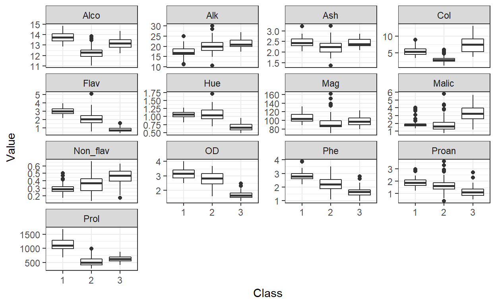
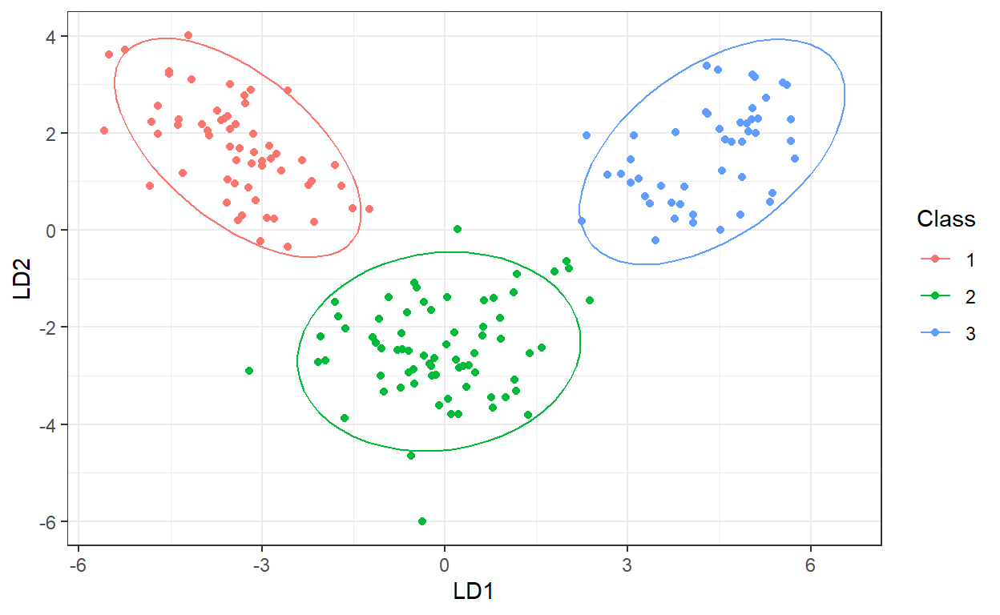

An Gentle Introduction of Discriminant Analysis & Its Applicant
Approach for multiclass classification.
A discriminant is a function that takes an input vector x and assigns to one of the multiple classes.
\[ Pr(y =𝑘\mid 𝑋=𝑥) = \frac{\pi_k f_k(x)}{\sum_{l=1}^K \pi_l f_l(x)} \]
where
\(\pi_k\): overall prior probability that a randomly chosen observation comes from the \(𝑘\)-th class
\(f_k(x)\): the density function of \(𝑥\)
\[ Pr(y =𝑘\mid 𝑋=𝑥) = \frac{\pi_k f_k(x)}{\sum_{l=1}^K \pi_l f_l(x)} \]
where
\(\pi_k\): overall prior probability that a randomly chosen observation comes from the \(𝑘\)-th class
\(f_k(x)\): the density function of \(𝑥\)
LDA = \(f_k(x)\) are Gaussian densities, with the same covariance matrix \(\sum\) in each class.
QDA = With Gaussians but different \(\sum_k\) in each class, we get quadratic discriminant analysis.
NOTE = By proposing specific density models for \(f_k(x)\), including nonparametric approaches.
The strengths of the LDA and QDA algorithms are:
The weaknesses of the LDA and QDA algorithms are:
When we should apply LDA vs QDA
We have a tibble containing 178 cases and 14 variables of measurements made on various wine bottles.
#install.packages("mlr")
library(mlr)
library(tidyverse)
#install.packages("HDclassif")
data(wine, package = "HDclassif")
wineTib <- as_tibble(wine)
wineTib
# A tibble: 178 x 14
class V1 V2 V3 V4 V5 V6 V7 V8 V9 V10
<int> <dbl> <dbl> <dbl> <dbl> <int> <dbl> <dbl> <dbl> <dbl> <dbl>
1 1 14.2 1.71 2.43 15.6 127 2.8 3.06 0.28 2.29 5.64
2 1 13.2 1.78 2.14 11.2 100 2.65 2.76 0.26 1.28 4.38
3 1 13.2 2.36 2.67 18.6 101 2.8 3.24 0.3 2.81 5.68
4 1 14.4 1.95 2.5 16.8 113 3.85 3.49 0.24 2.18 7.8
5 1 13.2 2.59 2.87 21 118 2.8 2.69 0.39 1.82 4.32
6 1 14.2 1.76 2.45 15.2 112 3.27 3.39 0.34 1.97 6.75
7 1 14.4 1.87 2.45 14.6 96 2.5 2.52 0.3 1.98 5.25
8 1 14.1 2.15 2.61 17.6 121 2.6 2.51 0.31 1.25 5.05
9 1 14.8 1.64 2.17 14 97 2.8 2.98 0.290 1.98 5.2
10 1 13.9 1.35 2.27 16 98 2.98 3.15 0.22 1.85 7.22
# ... with 168 more rows, and 3 more variables: V11 <dbl>, V12 <dbl>,
# V13 <int>names(wineTib) <- c("Class", "Alco", "Malic", "Ash", "Alk", "Mag",
"Phe", "Flav", "Non_flav", "Proan", "Col", "Hue",
"OD", "Prol")
wineTib$Class <- as.factor(wineTib$Class)
wineTib
# A tibble: 178 x 14
Class Alco Malic Ash Alk Mag Phe Flav Non_flav Proan
<fct> <dbl> <dbl> <dbl> <dbl> <int> <dbl> <dbl> <dbl> <dbl>
1 1 14.2 1.71 2.43 15.6 127 2.8 3.06 0.28 2.29
2 1 13.2 1.78 2.14 11.2 100 2.65 2.76 0.26 1.28
3 1 13.2 2.36 2.67 18.6 101 2.8 3.24 0.3 2.81
4 1 14.4 1.95 2.5 16.8 113 3.85 3.49 0.24 2.18
5 1 13.2 2.59 2.87 21 118 2.8 2.69 0.39 1.82
6 1 14.2 1.76 2.45 15.2 112 3.27 3.39 0.34 1.97
7 1 14.4 1.87 2.45 14.6 96 2.5 2.52 0.3 1.98
8 1 14.1 2.15 2.61 17.6 121 2.6 2.51 0.31 1.25
9 1 14.8 1.64 2.17 14 97 2.8 2.98 0.290 1.98
10 1 13.9 1.35 2.27 16 98 2.98 3.15 0.22 1.85
# ... with 168 more rows, and 4 more variables: Col <dbl>, Hue <dbl>,
# OD <dbl>, Prol <int>We got:
- 13 continuous measurements made on 178 bottles of wine, where each measurement is the amount of a different compound/element in the wine.
- Class: vineyard the bottle comes from.
wineUntidy <- gather(wineTib, "Variable", "Value", -Class)
ggplot(wineUntidy, aes(Class, Value)) +
facet_wrap(~ Variable, scales = "free_y") +
geom_boxplot() +
theme_bw()

Box and whisker plots of each continuous variable in the data against vineyard number. For the box and whiskers: the thick horizontal line represents the median, the box represents the interquartile range (IQR), the whiskers represent the Tukey range (1.5 times the IQR above and below the quartiles), and the dots represent data outside of the Tukey range. LDA modelwineTask <- makeClassifTask(data = wineTib, target = "Class")
lda <- makeLearner("classif.lda")
ldaModel <- train(lda, wineTask)
Extracting discriminant function values for each case
ldaModelData <- getLearnerModel(ldaModel)
ldaPreds <- predict(ldaModelData)$x
head(ldaPreds)
LD1 LD2
1 -4.700244 1.9791383
2 -4.301958 1.1704129
3 -3.420720 1.4291014
4 -4.205754 4.0028715
5 -1.509982 0.4512239
6 -4.518689 3.2131376Plotting the discriminant function values against each other
wineTib %>%
mutate(LD1 = ldaPreds[, 1],
LD2 = ldaPreds[, 2]) %>%
ggplot(aes(LD1, LD2, col = Class)) +
geom_point() +
stat_ellipse() +
theme_bw()

QDA modelqda <- makeLearner("classif.qda")
qdaModel <- train(qda, wineTask)
Cross-validating the LDA and QDA models
kFold <- makeResampleDesc(method = "RepCV", folds = 10, reps = 50,
stratify = TRUE)
ldaCV <- resample(learner = lda, task = wineTask, resampling = kFold,
measures = list(mmce, acc))
qdaCV <- resample(learner = qda, task = wineTask, resampling = kFold,
measures = list(mmce, acc))
ldaCV$aggr
mmce.test.mean acc.test.mean
0.01265256 0.98734744 qdaCV$aggr
mmce.test.mean acc.test.mean
0.00844066 0.99155934 Calculating confusion matrices
calculateConfusionMatrix(ldaCV$pred, relative = TRUE)
Relative confusion matrix (normalized by row/column):
predicted
true 1 2 3 -err.-
1 0.999/1e+00 0.001/9e-04 0.000/0e+00 0.001
2 0.009/1e-02 0.975/1e+00 0.015/2e-02 0.025
3 0.000/0e+00 0.010/7e-03 0.990/1e+00 0.010
-err.- 0.011 0.007 0.023 0.01
Absolute confusion matrix:
predicted
true 1 2 3 -err.-
1 2947 3 0 3
2 32 3463 55 87
3 0 23 2377 23
-err.- 32 26 55 113calculateConfusionMatrix(qdaCV$pred, relative = TRUE)
Relative confusion matrix (normalized by row/column):
predicted
true 1 2 3 -err.-
1 0.994/0.984 0.006/0.005 0.000/0.000 0.006
2 0.014/0.016 0.986/0.993 0.000/0.000 0.014
3 0.000/0.000 0.004/0.003 0.996/1.000 0.004
-err.- 0.016 0.007 0.000 0.008
Absolute confusion matrix:
predicted
true 1 2 3 -err.-
1 2933 17 0 17
2 49 3501 0 49
3 0 9 2391 9
-err.- 49 26 0 75Predicting which vineyard the poisoned wine came from
poisoned <- tibble(Alco = 13, Malic = 2, Ash = 2.2, Alk = 19, Mag = 100,
Phe = 2.3, Flav = 2.5, Non_flav = 0.35, Proan = 1.7,
Col = 4, Hue = 1.1, OD = 3, Prol = 750)
predict(qdaModel, newdata = poisoned)
Prediction: 1 observations
predict.type: response
threshold:
time: 0.00
response
1 1The model predicts that the poisoned bottle came from vineyard 1.
Here’s we ends the analytic example.
Hastie, T., Tibshirani, R., & Friedman, J. (2017). The Elements of Statistical Learning: Data Mining, Inference, and Prediction, Second Edition. New York, NY: Springer New York.
Rhys, H. (2020). Machine Learning with R, the tidyverse, and mlr (1st edition ed.): Manning Publications.